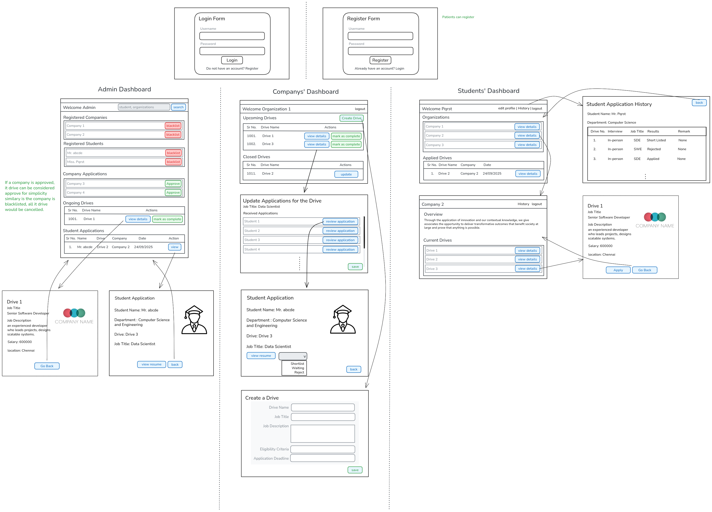

Current Focus
Loading...
Overall Progress
0%Project Snapshot
Execution Summary
Update Loop
Daily Workflow
- Tick task checkboxes directly on the page. They persist in this browser using
localStorage. - Use the reset button on a day card if you want to clear that day’s checklist.
- Update
progress.jsonwhen you want the shared repo version to reflect real progress. - Commit and push after updating
progress.jsonso the Vercel copy matches your tracked work.
Timeline
Three-Week Build Sequence
Daily Tracker
Day-by-Day Execution Board
Milestones
IITM Mapping
Risk Log
Scope Guardrails
Tracker Mode
How it Works
Checkbox progress is saved only in your current browser on this device.
To make progress visible on GitHub or Vercel for every device, update progress.json and push it.
Architecture
System Shape
Wireframe
Reference Screen Flow

Domain Model
Core Tables and Relationships
API Plan
Resource Groups
Acceptance